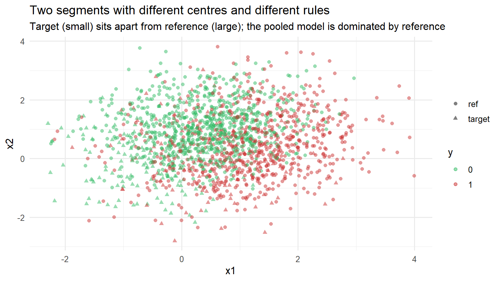
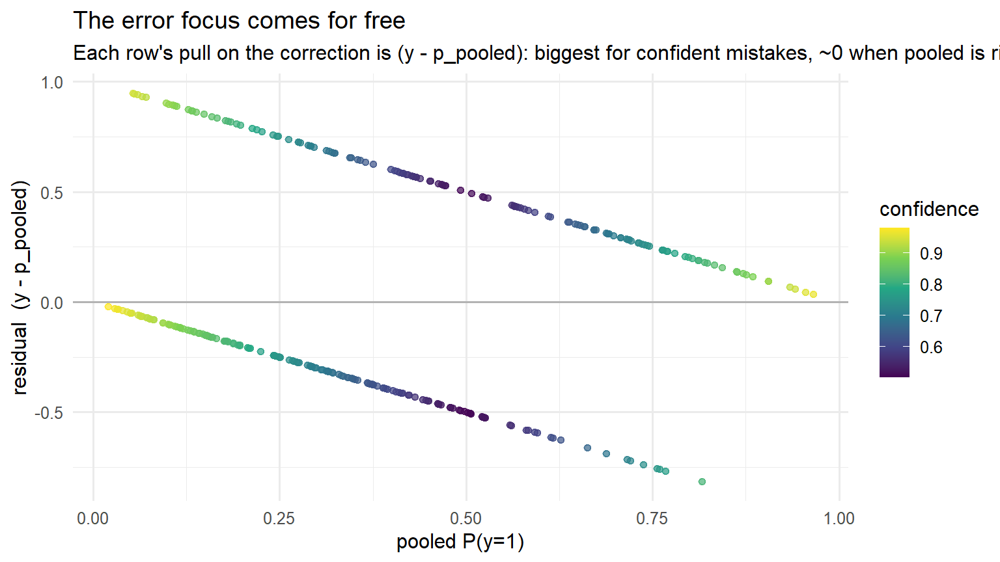
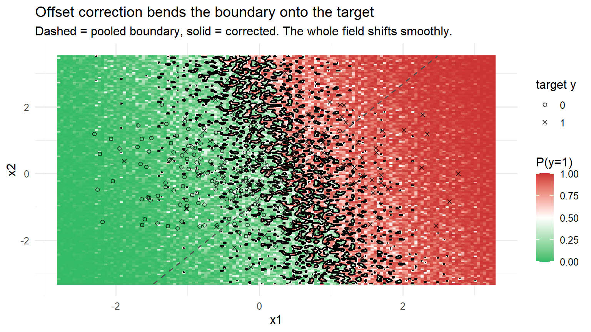
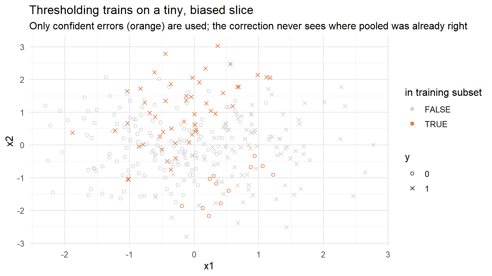
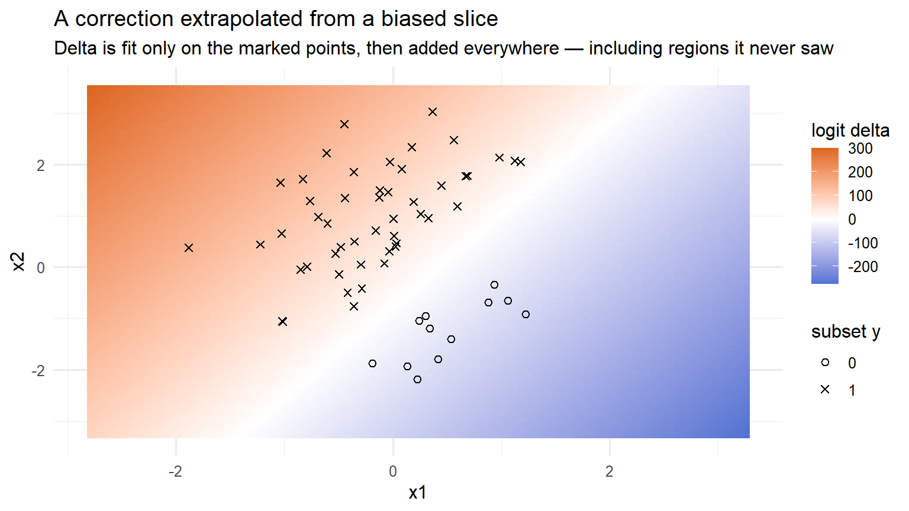
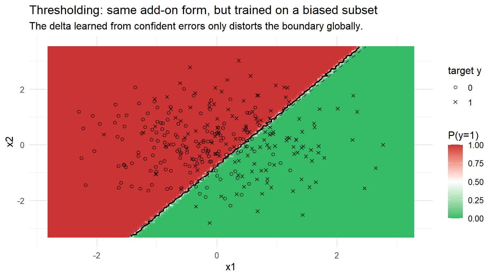
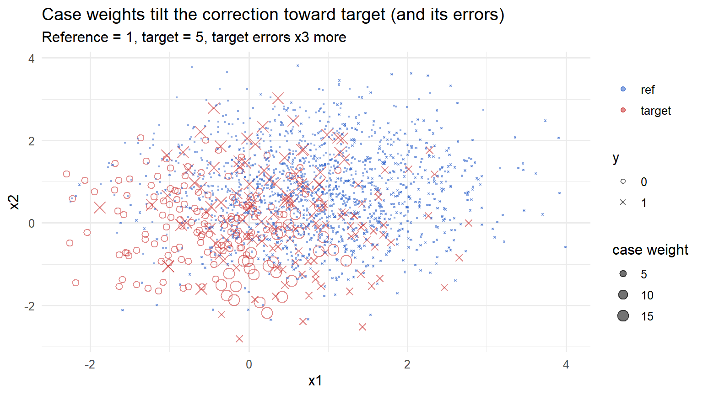
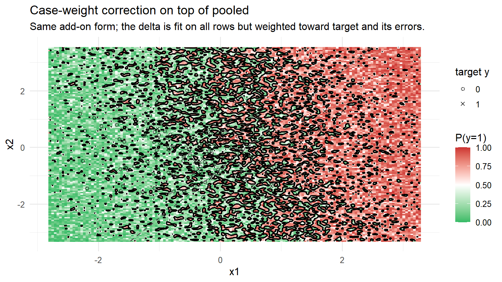
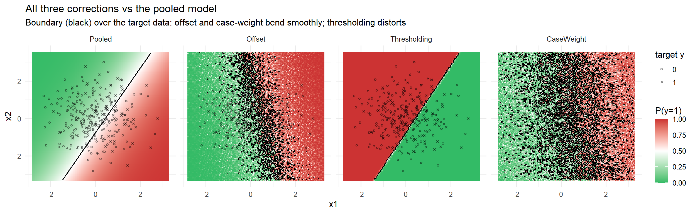
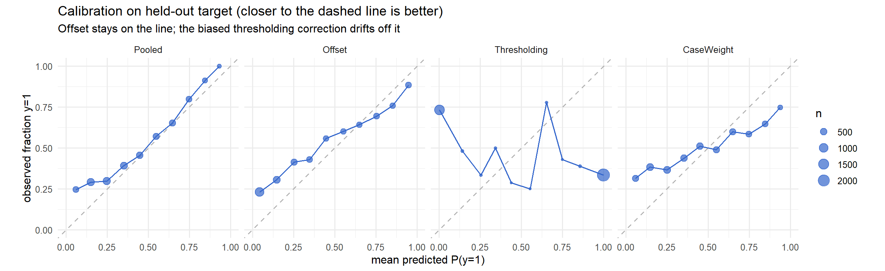

library(dplyr)
library(tidyr)
library(ggplot2)
library(knitr)
theme_set(theme_minimal(base_size = 12))Correcting a Pooled Model Toward One Segment: Three Ways, One Architecture
R
Machine Learning
Model Deployment
Calibration
Suppose we already have a pooled model — one trained across several customer segments — and we want it to perform better on a single target segment without throwing the pooled model away. A clean and popular pattern is to leave the pooled model untouched and learn a small correction on top of it in log-odds space:
\[ \text{final logit}(x) \;=\; \underbrace{\text{pooled logit}(x)}_{\text{frozen}} \;+\; \alpha \cdot \underbrace{\delta(x)}_{\text{learned correction}} \]
The correction \(\delta(x)\) is just a second model fit with the pooled model’s output as a fixed offset, and alpha controls how strongly we apply it. That much is common to every approach here. The interesting question — and the whole subject of this post — is which rows we let train the correction:
- Offset (all rows). Fit the correction on the entire target sample.
- Thresholding (a subset). Fit it only on rows where the pooled model is confidently wrong.
- Case-weight (the whole population). Fit it on everyone, but weight the rows toward target and toward its mistakes.
These sound similar, but they behave very differently. To see the difference rather than just tabulate it, we work in two dimensions so every model is a curve in the plane and we can watch the decision boundary move.
Required Packages
A couple of dependency-free helpers — a rank-based AUC and a Brier score (mean squared error of the predicted probability, which rewards good calibration as well as good ranking):
auc <- function(y, s) {
r <- rank(s); n1 <- sum(y); n0 <- length(y) - n1
(sum(r[y == 1]) - n1 * (n1 + 1) / 2) / (n1 * n0)
}
brier <- function(y, p) mean((p - y)^2)
calib_tbl <- function(y, p, bins = 10) {
b <- cut(p, breaks = seq(0, 1, length.out = bins + 1), include.lowest = TRUE)
data.frame(y = y, p = p, b = b) |>
group_by(b) |>
summarise(mean_p = mean(p), mean_y = mean(y), n = dplyr::n(), .groups = "drop")
}Simulating Two Segments
Each segment has its own feature centre (covariate shift) and its own rule mapping features to the outcome (concept shift). A shared quadratic term, fixed across segments, makes a straight-line model slightly wrong on purpose, so no method can ever be perfect and the comparison stays fair.
quad <- c(0.8, 0.8) # shared nonlinearity, held fixed
gen_segment <- function(n, mu, beta, b0, seg, seed) {
set.seed(seed)
X <- matrix(rnorm(n * 2), n, 2)
X <- sweep(X, 2, mu, "+") # covariate shift
lp <- b0 + X %*% beta + ((X^2 - 1) %*% (quad * 0.5))
y <- rbinom(n, 1, plogis(as.vector(lp)))
data.frame(x1 = X[, 1], x2 = X[, 2], y = y, seg = seg)
}The target sample is small (300 rows) and the reference sample is large (1,500 rows). Because the pooled model is dominated by the abundant reference data, it ends up visibly wrong on target — which is exactly the situation a correction is meant to fix.
target_tr <- gen_segment(300, mu = c(0.0, 0.0), beta = c(1.8, 0.4), b0 = 0.0, "target", 11)
ref_tr <- gen_segment(1500, mu = c(0.8, 0.8), beta = c(0.8, -1.6), b0 = 0.0, "ref", 12)
# Held-out test sets for honest metrics.
target_te <- gen_segment(4000, mu = c(0.0, 0.0), beta = c(1.8, 0.4), b0 = 0.0, "target", 21)
ref_te <- gen_segment(4000, mu = c(0.8, 0.8), beta = c(0.8, -1.6), b0 = 0.0, "ref", 22)
all_tr <- bind_rows(target_tr, ref_tr)ggplot(all_tr, aes(x1, x2, color = factor(y), shape = seg)) +
geom_point(alpha = 0.5, size = 1.6) +
scale_color_manual(values = c("0" = "#3b6", "1" = "#c33"), name = "y") +
labs(title = "Two segments with different centres and different rules",
subtitle = "Target (small) sits apart from reference (large); the pooled model is dominated by reference",
shape = NULL)
The Pooled Model
pooled <- glm(y ~ x1 + x2, data = all_tr, family = binomial())
pp <- predict(pooled, target_tr, type = "response")
target_tr$logit_pooled <- predict(pooled, target_tr, type = "link")
target_tr$p_pooled <- pp
target_tr$pred_class <- as.integer(pp > 0.5)
target_tr$wrong <- target_tr$pred_class != target_tr$y
target_tr$conf <- pmax(pp, 1 - pp)
target_tr$residual <- target_tr$y - pp
round(auc(target_te$y, predict(pooled, target_te, type = "response")), 3)[1] 0.737That held-out target AUC is mediocre — the pooled model has compromised toward the larger reference segment. Now we fix it three ways.
One Scorer for All Three Methods
Every method below trains a correction with the pooled log-odds as its offset, so a single function applies any of them on top of the frozen pooled model. The trick is that predict(corr, newdata, type = "link") returns only the learned delta \(\delta(x)\) — R does not re-add the offset for new data, which is precisely what we want.
add_on <- function(corr, nd, alpha = 1)
plogis(predict(pooled, nd, type = "link") + alpha * predict(corr, nd, type = "link"))We will also reuse a boundary plotter that draws the predicted-probability field, the 0.5 decision boundary (solid), the pooled boundary for reference (dashed), and the target points on top.
rng <- function(v, pad = 0.5) c(min(v) - pad, max(v) + pad)
gx <- seq(rng(target_tr$x1)[1], rng(target_tr$x1)[2], length.out = 140)
gy <- seq(rng(target_tr$x2)[1], rng(target_tr$x2)[2], length.out = 140)
grid <- expand.grid(x1 = gx, x2 = gy)
grid_pooled <- grid; grid_pooled$p <- predict(pooled, grid, type = "response")
boundary_plot <- function(grid_df, title, sub = NULL, dashed = NULL) {
g <- ggplot() +
geom_raster(data = grid_df, aes(x1, x2, fill = p)) +
scale_fill_gradient2(midpoint = 0.5, low = "#3b6", mid = "white", high = "#c33",
limits = c(0, 1), name = "P(y=1)") +
geom_contour(data = grid_df, aes(x1, x2, z = p), breaks = 0.5,
color = "black", linewidth = 0.8) +
geom_point(data = target_tr, aes(x1, x2, shape = factor(y)), size = 1.5, alpha = 0.7) +
scale_shape_manual(values = c("0" = 1, "1" = 4), name = "target y") +
labs(title = title, subtitle = sub)
if (!is.null(dashed))
g <- g + geom_contour(data = dashed, aes(x1, x2, z = p), breaks = 0.5,
color = "grey30", linetype = "dashed", linewidth = 0.7)
g
}Method 1 — Offset, Trained on All Target Rows
Freeze the pooled log-odds as an offset and fit fresh coefficients on the whole target sample. The model can only learn a delta on top of pooled, and it is fit by maximum likelihood on every target row.
off_train <- predict(pooled, target_tr, type = "link")
corr_off <- glm(y ~ x1 + x2, data = target_tr, family = binomial(), offset = off_train)
score_offset <- function(nd, alpha = 1) add_on(corr_off, nd, alpha)The reason this works so well is subtle but important: the gradient of the log-loss for each row is exactly \((y - p_\text{pooled})\). That residual is largest where the pooled model is confidently wrong and near zero where it is already right. So the correction automatically concentrates on the pooled model’s mistakes — with no threshold and no data discarded.
ggplot(target_tr, aes(p_pooled, residual, color = conf)) +
geom_hline(yintercept = 0, color = "grey70") +
geom_point(alpha = 0.7, size = 1.6) +
scale_color_viridis_c(name = "confidence") +
labs(title = "The error focus comes for free",
subtitle = "Each row's pull on the correction is (y - p_pooled): biggest for confident mistakes, ~0 when pooled is right",
x = "pooled P(y=1)", y = "residual (y - p_pooled)")
Applied across the plane, the correction bends the boundary smoothly off the pooled position and onto the target data:
grid_off <- grid; grid_off$p <- score_offset(grid)
boundary_plot(grid_off,
"Offset correction bends the boundary onto the target",
"Dashed = pooled boundary, solid = corrected. The whole field shifts smoothly.",
dashed = grid_pooled)
Method 2 — Thresholding, Trained Only on Confident Errors
Same on-top architecture, but now we fit the correction only on the rows where the pooled model is confidently wrong. The literal rule “confidence > 0.9 and misclassified” runs into an immediate problem:
target_tr$selected_strict <- target_tr$conf > 0.9 & target_tr$wrong
table(factor(target_tr$y[target_tr$selected_strict], levels = 0:1))
0 1
0 6 The confident mistakes nearly all fall on one side, so the subset is essentially single-class and glm(y ~ x) cannot be fit at all. To make the method runnable we relax the threshold to “fairly confident (> 0.6) and wrong”, which gives us both classes:
CONF <- 0.6
target_tr$selected <- target_tr$conf > CONF & target_tr$wrong
sel <- target_tr[target_tr$selected, ]
table(factor(sel$y, levels = 0:1))
0 1
12 49 Even relaxed, this is a tiny, geometrically biased slice of the data:
ggplot(target_tr, aes(x1, x2)) +
geom_point(aes(color = selected, shape = factor(y)), size = 1.8, alpha = 0.8) +
scale_color_manual(values = c("FALSE" = "grey80", "TRUE" = "#d62"), name = "in training subset") +
scale_shape_manual(values = c("0" = 1, "1" = 4), name = "y") +
labs(title = "Thresholding trains on a tiny, biased slice",
subtitle = "Only confident errors (orange) are used; the correction never sees where pooled was already right")
We fit the correction on that subset, again as an offset on top of pooled, and apply it everywhere — exactly like the offset method:
off_sel <- predict(pooled, sel, type = "link")
corr_thr <- glm(y ~ x1 + x2, data = sel, family = binomial(), offset = off_sel)
score_thresh <- function(nd, alpha = 1) add_on(corr_thr, nd, alpha)Here is the danger, made visible. The delta is estimated from that narrow slice but then added across the entire feature space, including regions the subset never covered:
grid_delta <- grid; grid_delta$delta <- predict(corr_thr, grid, type = "link")
ggplot() +
geom_raster(data = grid_delta, aes(x1, x2, fill = delta)) +
scale_fill_gradient2(midpoint = 0, low = "#36c", mid = "white", high = "#d62", name = "logit delta") +
geom_point(data = sel, aes(x1, x2, shape = factor(y)), size = 1.9) +
scale_shape_manual(values = c("0" = 1, "1" = 4), name = "subset y") +
labs(title = "A correction extrapolated from a biased slice",
subtitle = "Delta is fit only on the marked points, then added everywhere — including regions it never saw")
The resulting boundary is dragged off even where the pooled model was perfectly fine:
grid_thr <- grid; grid_thr$p <- score_thresh(grid)
boundary_plot(grid_thr,
"Thresholding: same add-on form, but trained on a biased subset",
"The delta learned from confident errors only distorts the boundary globally.",
dashed = grid_pooled)
But shouldn’t we only apply it where pooled is wrong?
A natural objection: surely we should only apply the thresholding correction to the cases the pooled model gets wrong — not to everyone. The catch is that “the pooled model is wrong here” is defined using the label y, which we have in training but not at scoring time. On live data there is no y, so we cannot identify the error cases and route them to the correction. (Recall the strict rule was conf > 0.9 & wrong; at inference we can observe conf > 0.9 but never the wrong half.)
That leaves two imperfect choices, neither of which rescues the method. We can apply the delta to everyone — what we did above — which extrapolates an error-only correction onto the majority of cases the pooled model already handled correctly. Or we can gate on an observable proxy for “likely wrong”, in practice the pooled model’s confidence — but confidence is not error: most confident predictions are correct, so a confidence gate either fires mostly on correct rows or, tightened, almost never fires.
This is the structural advantage of the all-rows methods. The offset and case-weight corrections never have to decide where to apply themselves. Fit on every row, the delta is naturally pulled toward zero wherever the pooled model was already right — those rows have residuals near zero and contribute no gradient — and grows only where the pooled model erred. The correction self-targets, with no label-dependent gate required.
Method 3 — Case-Weight, Trained on the Whole Population
The third option keeps every row but weights them: reference rows count once, target rows count more, and target rows the pooled model gets wrong count more still. This tilts the correction toward target and its hard cases while still seeing the full data.
W_TARGET <- 5 # a target row counts this much more than a reference row
W_ERROR <- 3 # extra multiplier on target rows the pooled model gets wrong
all_tr$p_pooled <- predict(pooled, all_tr, type = "response")
all_tr$wrong <- (all_tr$p_pooled > 0.5) != (all_tr$y == 1)
all_tr$w <- ifelse(all_tr$seg == "target", W_TARGET, 1) *
ifelse(all_tr$seg == "target" & all_tr$wrong, W_ERROR, 1)
off_all <- predict(pooled, all_tr, type = "link")
corr_cw <- glm(y ~ x1 + x2, data = all_tr, family = binomial(),
offset = off_all, weights = all_tr$w)
score_cw <- function(nd, alpha = 1) add_on(corr_cw, nd, alpha)The weight map shows where the correction is told to pay attention:
ggplot(all_tr, aes(x1, x2)) +
geom_point(aes(size = w, color = seg, shape = factor(y)), alpha = 0.55) +
scale_size_continuous(range = c(0.4, 4), name = "case weight") +
scale_color_manual(values = c("target" = "#c33", "ref" = "#36c"), name = NULL) +
scale_shape_manual(values = c("0" = 1, "1" = 4), name = "y") +
labs(title = "Case weights tilt the correction toward target (and its errors)",
subtitle = paste0("Reference = 1, target = ", W_TARGET, ", target errors x", W_ERROR, " more"))
Because it still uses every row, the boundary moves smoothly, much like the offset method:
grid_cw <- grid; grid_cw$p <- score_cw(grid)
boundary_plot(grid_cw,
"Case-weight correction on top of pooled",
"Same add-on form; the delta is fit on all rows but weighted toward target and its errors.",
dashed = grid_pooled)
Head to Head
All four models on one canvas. Offset and case-weight bend the boundary cleanly toward target; thresholding distorts it because its delta came from a biased slice.
methods <- list(
Pooled = function(nd) predict(pooled, nd, type = "response"),
Offset = function(nd) score_offset(nd),
Thresholding = function(nd) score_thresh(nd),
CaseWeight = function(nd) score_cw(nd)
)
grid_all <- bind_rows(lapply(names(methods), function(m) {
d <- grid; d$p <- methods[[m]](grid); d$method <- m; d
}))
grid_all$method <- factor(grid_all$method, levels = names(methods))
ggplot(grid_all, aes(x1, x2)) +
geom_raster(aes(fill = p)) +
scale_fill_gradient2(midpoint = 0.5, low = "#3b6", mid = "white", high = "#c33",
limits = c(0, 1), name = "P(y=1)") +
geom_contour(aes(z = p), breaks = 0.5, color = "black", linewidth = 0.7) +
geom_point(data = target_tr, aes(x1, x2, shape = factor(y)), size = 1, alpha = 0.5) +
scale_shape_manual(values = c("0" = 1, "1" = 4), name = "target y") +
facet_wrap(~method, nrow = 1) +
labs(title = "All three corrections vs the pooled model",
subtitle = "Boundary (black) over the target data: offset and case-weight bend smoothly; thresholding distorts")
The held-out numbers confirm the picture. Higher AUC is better ranking; lower Brier is better calibration on target.
bind_rows(lapply(names(methods), function(m) {
f <- methods[[m]]
data.frame(method = m,
auc_target = auc(target_te$y, f(target_te)),
auc_reference = auc(ref_te$y, f(ref_te)),
brier_target = brier(target_te$y, f(target_te)))
})) |>
mutate(across(where(is.numeric), \(x) round(x, 3))) |>
kable()| method | auc_target | auc_reference | brier_target |
|---|---|---|---|
| Pooled | 0.737 | 0.826 | 0.210 |
| Offset | 0.752 | 0.677 | 0.219 |
| Thresholding | 0.268 | 0.180 | 0.680 |
| CaseWeight | 0.631 | 0.595 | 0.261 |
Offset and case-weight lift target AUC substantially over the pooled baseline while keeping calibration tight. Thresholding does the opposite: trained on a biased subset and extrapolated everywhere, it can fall below the pooled model it was meant to improve.
Calibration tells the same story — how closely each method’s stated probabilities match observed outcomes on target:
calib_all <- bind_rows(lapply(names(methods), function(m)
calib_tbl(target_te$y, methods[[m]](target_te)) |> mutate(method = m))) |>
mutate(method = factor(method, levels = names(methods)))
ggplot(calib_all, aes(mean_p, mean_y)) +
geom_abline(slope = 1, intercept = 0, color = "grey70", linetype = "dashed") +
geom_line(color = "#36c") +
geom_point(aes(size = n), color = "#36c", alpha = 0.7) +
facet_wrap(~method, nrow = 1) +
coord_equal(xlim = c(0, 1), ylim = c(0, 1)) +
labs(title = "Calibration on held-out target (closer to the dashed line is better)",
subtitle = "Offset stays on the line; the biased thresholding correction drifts off it",
x = "mean predicted P(y=1)", y = "observed fraction y=1", size = "n")
What This Means
All three methods are the same model — pooled plus a learned delta — and they differ only in which rows train that delta. That single choice decides everything.
The offset correction fits the delta on all target rows. Its error focus is automatic, because the log-loss gradient already weights each row by how wrong the pooled model was; nothing is discarded and calibration holds. The case-weight correction is a close and legitimate cousin: it also uses every row, so it stays smooth and well-behaved. Its one risk is over-tuning — pushing the error multiplier too high amplifies noisy points beyond what the likelihood gradient already does, which can chase noise and erode calibration.
The thresholding correction is the cautionary tale. Restricting training to confidently-wrong rows feels like sharpening the fix where it is needed, but it throws away every row that tells the model where the pooled prediction was already correct. The delta is then estimated from a narrow, geometrically biased slice and extrapolated across the whole feature space — so it distorts the boundary in regions it never observed, and in this example it underperforms the very model it was correcting. The lesson generalises: a correction is only as trustworthy as the coverage of the data it was fit on. When in doubt, fit on all the rows and let the loss decide where to focus.